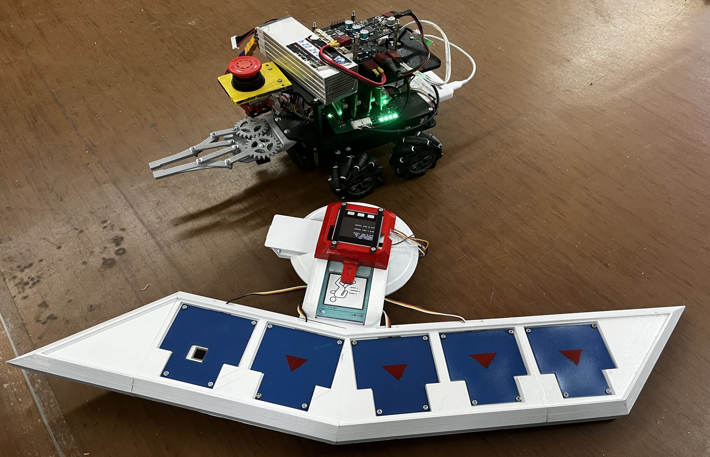

研究体験実習
1.About
「かっこいいコントロールを作る」というテーマで3人のチームで共同研究を行いました。
カードゲームアニメで出てくるコントローラを用いて見る人を魅了するコントローラを目指しました。
カードには操作テキストが書かれておりかざすとその通りに動く。

2.Achivement
コントローラ
コントローラは3Dプリンタで作成し、スプレーで塗装しました。
写真は上記章の1.Aboutの画像参照
Robot
OOSOYO社が出しているメカナムホイールセット
を用いて製作。物をつかむために平行リンクを用いて動かしています。
以下に実際に動作したときの動画を添付します。
topに戻る